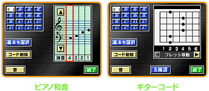
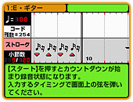
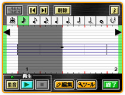

和音パートは、ピアノ和音とギターコードの２種類から選ぶことができます。ピアノ和音は最大４音、ギターコードは最大６音鳴らすことができます。和音のパターンはあらかじめいくつか登録されていますが、オリジナルの和音を作ることもできます。
演奏方法も異なり、ピアノ和音はボタン入力で、ギターコードはタッチペン入力。
ドラム以外なら、どの楽器でも和音パートに設定できるので、「トランペット」の和音をタッチペンを使ってかき鳴らすといった、実際にはありえない使い方もできます
どんなリズムで演奏するかを譜面に入力していく際、音符をひとつひとつ選んでいかなくても、直接入力を使えば、実際の演奏に近い形で入力していくことができます。ピアノ和音、ギターコード、どちらでも使えます。
長すぎる音符を置いた後に、音符のはみ出た部分だけ消したいと思ったことありませんか？「削除」機能を使うと音符が丸ごと消えてしまいますが、はみ出た音符の上に休符記号を置くと、消したい長さだけ消すことができます。
入力した歌詞を音符に当てはめていく「歌詞割当」の際、文字をひとつずつ選んでいかなくても、先頭の文字と最後の文字を当てはめると、その間の文字も自動的に等間隔で割当てできます。音符とずれて歌詞が割当てられてしまった場合は、後から一文字ずつ動かして調整することも可能です。

Ｘ＋十字ボタンの左右で、１６分音符ずつ範囲選択できますが、Ｘ＋Ｌ・Ｒボタンで、２分音符ずつ範囲選択することができます。
十字ボタンの上下を押すと、音の高さを変えることができますが、範囲選択をした状態でも同じことが可能です。選択範囲の音の高さを一斉に上下させて、音程を変えることができます。
範囲選択した部分は、編集機能でその部分の音符をコピーすることができますが、コピーした情報は、そのパートや同じ楽譜の他のパートだけでなく、別の楽譜に貼り付けることもできます。